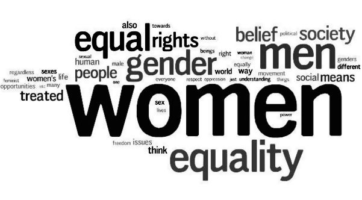

Women shall not be silenced!
This is a notice to all those who think they can undermine the value of women. You will not shut them out. You cannot shut them out.
Violence against Women: Sex, Power, Abuse
Fritzie Rodriguez
How big of a problem VAW is in the Philippines
© Rappler
A Story of Abuse
by Lynne Wallis
One woman tells her story of brutality at the hands of her father's friends. Read more at dailymail.co.uk.
© dailymail.co
To be a Woman in Pakistan
by Zara Jamal
Some six stories of abuse, shame, and survival in Pakistan.
© The Atlantic
Victory in Hollywood!
Jeremy B. White
Harvey Weinstein: four more women come forward claiming Hollywood producer sexually assaulted them.
© Independent
Unfair medical procedures
Harriet Marsden
Vaginal mesh campaigner 'dies of sepsis after antibiotic-resistant infection'
© Independent
A Most Dangerous Time for Women
Interviews by Melissa Davey
Five women tell their stories of leaving an abusive relationship.
© The Guardian